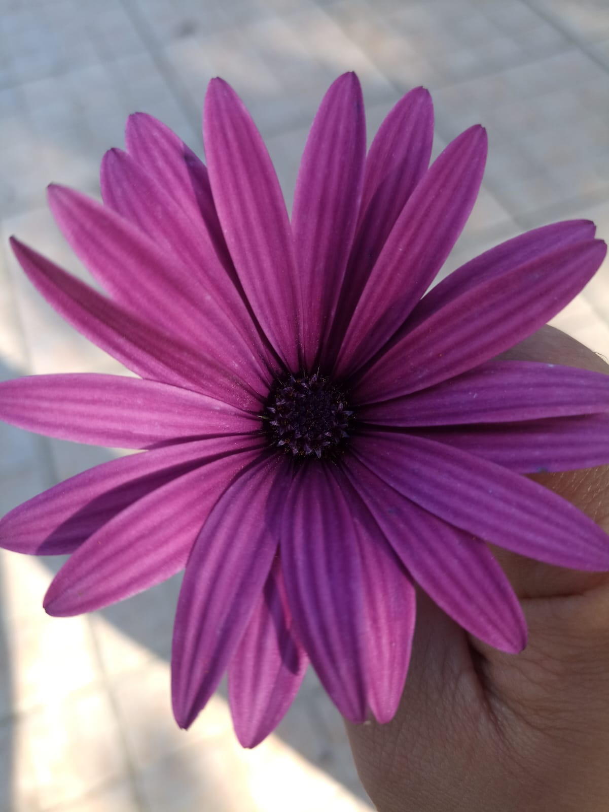
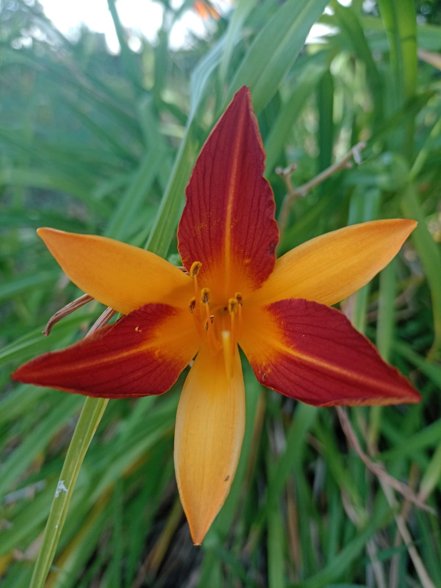

MALACOTHRIX GLABRATA
Originaria de Norteamérica, su aspecto es similar a la margarita puede medir de 12 a 35 cm de alto.

Cada foto tiene informacion acerca de la misma.

Originaria de Norteamérica, su aspecto es similar a la margarita puede medir de 12 a 35 cm de alto.
O conocida como serrinlla, es originaria de Europa y Asia, crece en prados, laderas y bordes de bosques, su nombre en griego significa mucha leche, antes se utilizaba para aumentar la producción de leche en el ganado.

También llamada compuesta reúnen mas de 30.000 especies, se extienden desde el desierto hasta las selvas, incluyendo pantanos y picos montañosos, entre sus especias están la lechuga, el girasol y manzanilla.
Nombre científico hemeroccalis que viene de origen griego y significa belleza de un dia, porque sus flores solo duran un dia, florecen por la mañana y se marchitan por la noche siendo reemplazada por otra al dia siguiente, son originarias de Europa y Asia.
